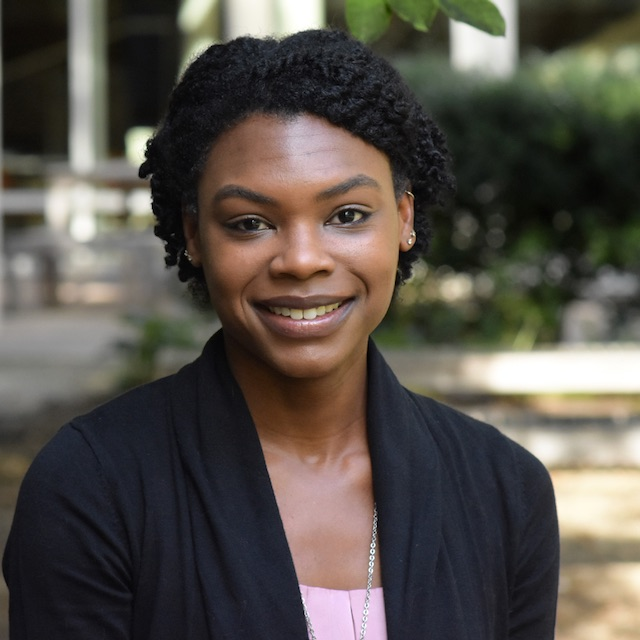
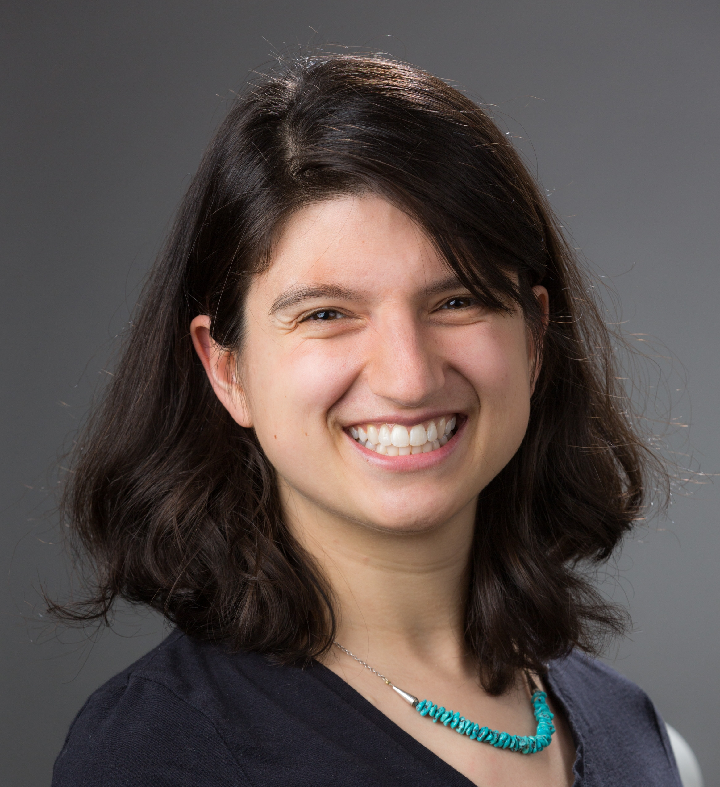

Meet the Team
Principal Investigators

Dr. Maria Tackett is an Assistant Professor of the Practice in the Department of Statistical Science at Duke University. Her current work focuses on understanding how active learning strategies can be used to promote engagement and student motivation in undergraduate statistics courses. She also studies how classroom practices in introductory math and statistics courses impact students’ sense of community, self-efficacy, and learning outcomes. Maria is an RStudio certified trainer and is actively involved in the R and statistics education communities.

Dr. Shira Viel is an Assistant Professor of the Practice in the Department of Mathematics at Duke University. She works primarily in introductory undergraduate mathematics education and is devoted to making math as welcoming and inclusive as possible. Current projects include investigating the impact of assessment and grading policies on Calculus students’ mathematical attitudes and perceptions; understanding students’ senses of community and self-efficacy in introductory quantitative science courses; and assessing the efficacy of math graduate student teacher training programs.
Research Assistants
Sarwari Das is a master’s candidate in Interdisciplinary Data Science in the Graduate School at Duke University. Her research work focuses on the intersection of behavior science and technology.
Previous Members
- Joe Choo (Spring 2022)
- Maggie Poulos (Summer - Fall 2021)